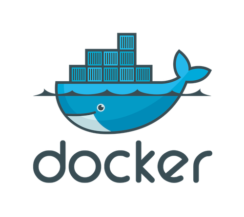

unasuke.comの話
2016-07-09 fukutech #06
うなすけ
OK 🙆
- 発表中の質問
- ヤジ
誰
- うなすけ
- 株式会社spice life所属
- 開発部 TMIX開発担当 ＆ インフラ部
誰
- うなすけ
- 株式会社spice life所属
- 開発部 TMIX開発担当 ＆ インフラ部
誰
- うなすけ
- 株式会社spice life所属
- 開発部 TMIX開発担当 ＆ インフラ部
unasuke.comの話
主にDockerの話をします
unasuke.comの話
全体的な話
2016-06-12 のDentoo.LT #14にて話しました
2:32:50あたりから語彙がなくなる
Q : なんでDockerの話をするのか
A : Dockercon 2016行ってきたから
Q : Dockercon 2016とはなにか
A : Dockerのカンファレンス
(今年はシアトル)
Q : Dockerとはなにか
A : いまからはなすよ！！！
本題に入る前に
今のうちにDockerをインストールしておいてください
https://www.docker.com/products/docker
( http://bit.ly/29nClmD )
本題
Dockerとは

Dockerとは
コンテナ型仮想化技術を用いた仮想化ソフトウェア
仮想化

みんなだいすきVirtualBox
GNU GPL v2 https://commons.wikimedia.org/wiki/File:Virtualbox_logo.png
VirtualBoxの仮想化
- CPUのレイヤーで仮想化(ホスト型仮想化)
- OSの起動時間とか必要
- 開発環境として使うのはよくある
Dockerの仮想化
- LXCを利用した仮想化(コンテナ型仮想化)
- カーネルをホストと共有しているので速い
- 本番環境として使うことが多い
おおざっぱにまとめると
VirtualBoxはOSの中にまたOSがドンという感じ
Dockerは実行するプログラムだけ隔離される感じ
VirtualBoxはWinやMacでも動くけど
DockerはLinux上でしか動かせない
(語弊あり)
Dockerなにがうれしいの
今までのインフラについて考える
たとえばRuby on Railsを動かしたいとして

Ruby on Railsが動くサーバーに必要なもの
- Ruby
- DB(mysql, postgresql...)
- Server(apache, nginx...)
- その他gemなどで必要なライブラリ
Ruby on Railsが動くサーバーに必要なもの
- Ruby ←versionどうするの
- DB ←versionどうするの
- Server ←versionどうするの
- ライブラリ ←versionどうするの
Ruby on Railsが動くサーバーを作る
$ sudo apt install ruby mysql nginx
$ wget railsのコード
$ mysqlやnginxやらの設定
$ portあけたりなんだり
$ dbのmigrateとか
ubuntuだとして
Ruby on Railsが動くサーバーが落ちたら
さっきの環境設定一からやりなおし？！？！
Infrastructure as Code
サーバーの状態をコードで管理する
chef, puppet, Ansible, itamae, Terraformなどなど
かくして平和が訪れた……
Infrastructure as Code
サーバーの状態をコードで管理する
chef, puppet, Ansible, itamae, Terraformなどなど
かくして平和が訪れた……
急にサーバーを増やさなきゃいけない！
えっ、サーバー用意すんの10分ほどかかるんですけど……
障害発生！すぐ直して！
サーバーで作業しちゃったけど、インフラ定義コード変更しないとなぁ……
無敵ではないInfrastructure as Code
- サーバーが「状態」を持ちがち
- 捨てられないサーバーが生まれがち
Dockerを導入すると
- 「捨てられる」インフラづくり
- 本番環境と開発環境が近づく
なぜそうなるのか
- コンテナはすぐ捨てられる、すぐ立ち上がる
- コンテナの中身は触らない
Immutable Infrastructure(不変のインフラ)ができあがる
Dockerやってみよう
Dockerやってみよう
hello world
$ docker run hello-world
hello world
何が起こったのか
- https://hub.docker.com/_/hello-world/からdocker imageをダウンロード
- ダウンロードしてきたdocker imageを実行
docker image？
Dockerfileをbuildしてできあがるもの。さっきから言っている「コンテナ」と考えることができる。
Dockerfile？
docker imageの設計図。これに従ってdocker imageをつくる。
Infrastructure as Codeの部分にあたる
Dockerfile ≠ docker image
Dockerfileからimageを作るときには
ファイルのコピーなどが発生するため
imageはどこでも作る事はできない
が、imageはどこでも実行することができる。
ソースコード ≠ コンパイルしたバイナリ
DockerでHTTPサーバーを動かしてみよう
https://github.com/unasuke/fukuitech-06-demo
$ docker run -p 3000:3000 unasuke/fukuitech-06-demo
ブラウザでhttp://localhost:3000にアクセス
docker buildしてみよう
index.htmlを編集するdocker buildするdocker runする
詳しくはREADMEを！！
unauske.comとdocker
HTTPサーバーであるH2Oを動作させるためにdockerを使っている
$ docker run -p 80:80 -p 443:443 -v /path/to/doc/root unasuke-com-server
まとめ
- dockerはコンテナ型仮想化技術
- Immutable Infrastructure
- unasuke.comはdockerの上で動いている